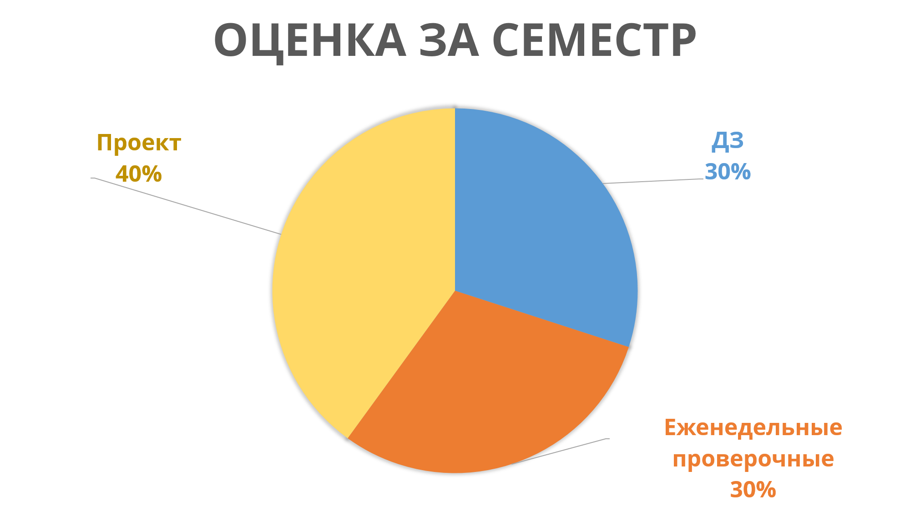

Московский физико - технический институт
Семинары: Вторник 17:05, 532 ГК; Лекции: среда 12:20, актовый зал
Семинарист: Даня Меркулов - писать можно в любое время, могу ответить не сразу (если долго не отвечаю - смело пишите еще раз!)

Справка
Осенний семестр охватывает выпуклый анализ, математическое программирование, являясь, в основном, глубоким теоретическим введением в мир оптимизации. Весенний семестр ориентируется на алгоритмы и предполагает плотную практическую работу. Актуальные новости о курсе рассылаются в телеграм канале.
Материалы курса
Все материалы курса будут выкладываться по мере готовности на этот сайт в разделе "Семинары". Скорее всего, там есть глупые опечатки, поэтому не стесняйтесь мне о них писать или скидывать в платформу анонимного фидбека (см.ниже). Материалы лекций осеннего семестра доступны по ссылке. Материалы весеннего семестра будут выкладываться по мере поступления. Для ознакомления доступны лекции Гасникова А.В. в Кавказском Математическом Центре.
Домашние задания
Будут так же выкладываться на сайте по мере появления. Их сдача происходит через платформу stepik. Домашнее задание выкладывается по материалам семинара, через неделю после выкладывания его стоимость начинает линейно убывать до 0 к моменту жесткого дедлайна (3 недели после выкладывания). Если у Вас возникли какие - то адекватные проблемы со сроками сдачи дз - пишите мне.
Система выставления оценки
